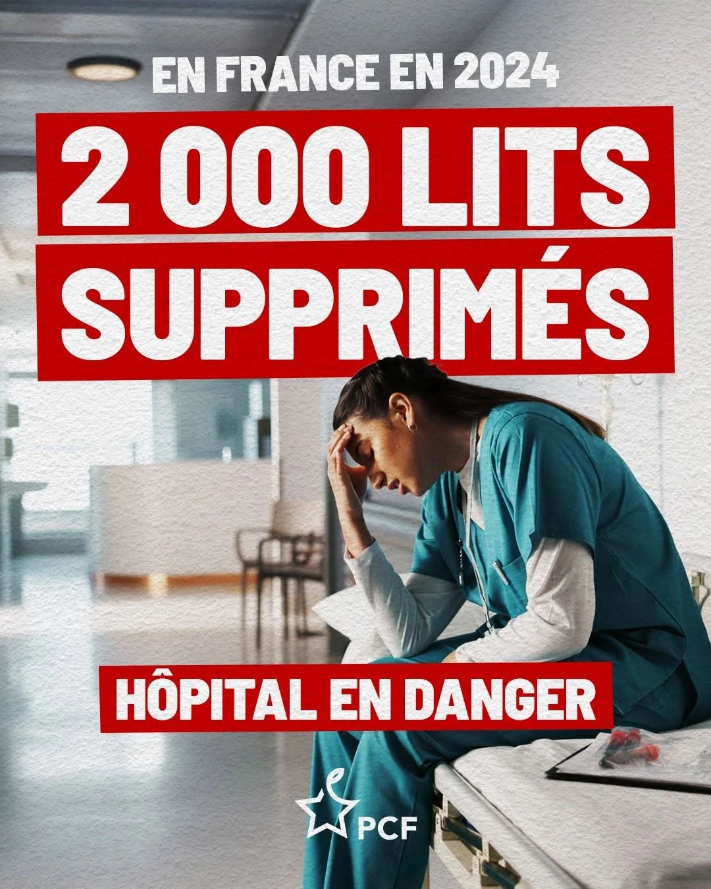

Publication relayée par le PCF 79
Le PCF dénonce les fermetures de lits à l’hôpital
Date de mise à jour indiquée par Facebook · 17 novembre 2025
Texte de la publication · PCF national
2 000 lits fermés en 2024.
L’austérité est un virus mortel pour la santé !
Pendant que les gouvernements réduisent les capacités de l’hôpital public, les soignant·es s’épuisent, craquent, quittent le métier. Sous-effectifs chroniques, services saturés, impossibilité d’assurer les soins dans de bonnes conditions : c’est le quotidien de celles et ceux qui tiennent encore l’hôpital debout.
Chaque lit fermé, c'est un patient mis en danger.
Dans le PLFSS 2026, les parlementaires communistes défendent :
plus de financements pour l’hôpital public,
l’amélioration de l’accès aux soins sur tout le territoire,
l’attractivité et la revalorisation des métiers du soin,
la fin des politiques d’austérité qui étranglent les établissements.
Autrement dit : un système de santé qui réponde aux besoins de la population pas aux exigences de rentabilité !
Nos vies valent plus que leurs économies.
Et nos soignant·es méritent mieux que l’épuisement.
Source : DREES, étude publiée le 13 novembre 2025.

Sources
PCF national · publication relayée par le PCF 79 · bibliothèque Facebook · AR-0002-FB-00957
À lire aussi · Le PCF dénonce le projet de doublement des franchises médicales